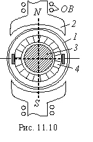

Магнитный поток МДПТ с полым якорем создаётся обмоткой возбуждения ОВ (рис. 11.10). Якорь представляет собой полый стакан 1, расположенный между полюсами статора 2 и неподвижным ферромагнитным сердечником
3. Обмотку якоря укладывают на цилиндрический каркас (стакан) и заливают эпоксидной смолой. Концы секций обмотки соединяют с пластинами коллектора 4. Момент инерции полого якоря невелик, благодаря чему существенно повышается быстродействие МДПТ.

Так как секции обмотки якоря окружены воздухом, а не ферромагнитным материалом, как у МДПТ с обычным якорем, то обмотка якоря имеет гораздо меньшую индуктивность. Это существенно улучшает условия эксплуатации двигателя, что в свою очередь увеличивает срок службы щеток и повышает стабильность выходной характеристики
n = f(Uу).
Недостатками МДПТ с полым якорем является необходимость значительного увеличения МДС обмотки возбуждения, так как воздушный зазор у них гораздо больше, чем у обычных ДПТ. Последнее приводит к некоторому увеличению массы, габаритных размеров машины и потерь мощности в обмотке возбуждения. Однако КПД МДПТ с полым якорем имеет примерно такую же величину (n = 0.3...0.45 в двигателях мощностью 1...15 Вт), как и МДПТ с якорем обычной конструкции.
|